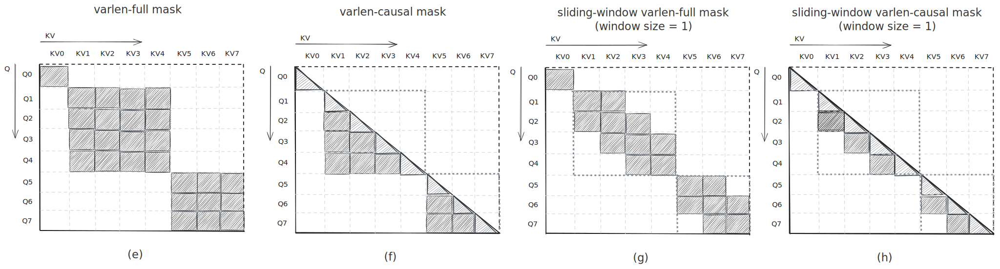

对于本次作业，我们将继续 Modeling 任务，以帮助你更深入地理解 Transformer 的各个组成模块。本次将特别关注 Transformer 结构核心的关键层之一：Attention Layer（注意力层）。
Task 1: Offline Sliding-Window Attention
Multi-head Attention（多头注意力机制） 模块是 Transformer 中一个至关重要的构建单元（具体内容可见参考文献），接收三个张量作为输入：
- Query tensor（查询张量），记作 $\mathbf{Q}$，满足 $\mathbf{Q} \in \mathbb{R}^{\text{batch_size} \times \text{seq_len_q} \times \text{num_head_q} \times \text{head_dim}}$，记为
[b, sq, hq, hd]。 - Key tensor（键张量） 和 Value tensor（值张量），记为$\mathbf{K}, \mathbf{V}$，两者具有相同的形状，满足 $\mathbf{K}, \mathbf{V} \in \mathbb{R}^{\text{batch_size} \times \text{seq_len_kv} \times \text{num_head_kv} \times \text{head_dim}}$，记为
[b, skv, hkv, hd]。
$\mathbf{Q}, \mathbf{K}, \mathbf{V}$ 共同构成了 Attention 模块的输入，用于后续的注意力计算。注意，对于 Multi-head Attention，batch_size 和 num_head 都应该被看作是 batch-like 维，而对于 seq_len 维度，$\mathbf{Q}$ 中的每一张量 $\mathbf{q}_\text{i}$ 可以被看作是第 i 个 token 的潜在嵌入查询信息（embedded latent query message），用于从知识 $\mathbf{V}$ 中查询相关信息，而 $\mathbf{V}$ 中的每一张量 $\mathbf{v}_\text{j}$ 可以被看作是第 j 个 token 的潜在嵌入知识表示（embedded latent knowledge archive）。为了聚合 $\mathbf{V}$ 中所有重要的信息并忽略其他无关的信息，每个 $\mathbf{v}_\text{j}$ 都对应一个潜在嵌入关键词张量 $\mathbf{k}_\text{j}$。通过计算 $\mathbf{q}_\text{i}$ 和 $\mathbf{k}_\text{j}$ 的点积标量 $\mathbf{q}_\text{i}\mathbf{k}_\text{j}^\top$，我们可以得到关于 $\mathbf{q}_\text{i}$ 和 $\mathbf{v}_\text{j}$ 之间的相似度得分（similarity score）。最终，每个 $\mathbf{q}_\text{i}$ 对应的聚合结果 $\mathbf{o}_\text{i}$ 表示为对 $\mathbf{V}$ 中所有 $\mathbf{v}_\text{j}$ 的加权和，即 $\mathbf{o}_\text{i} := \sum\limits_j \mathbf{a}^{(i)}_j\mathbf{v}_\text{j}$，其中，权重向量 $\mathbf{a}^{(i)}$ 由上述每个查询 $\mathbf{q}_\text{i}$ 与所有关键词 $\mathbf{k}_\text{j}$ 的 归一化点积相似度（normalized dot-product similarity） 构成。至于权重的归一化方式，最常见的做法是应用 softmax 操作，这被称为一种“软最大化（soft maximalization）”操作。其目的是让模型只 关注（pay attention to） 那些真正重要、即相似度得分最高的信息。
因此，整个 Attention 操作（针对每个 batch 和每个 head）可以表示为：
其中，上式中 $\mathbf{M}$ 用于实现注意力机制中的掩码机制，$\mathbf{M}$ 是一个二值 Attention Mask，其每个元素的取值为 $-\infty$ 或 $0$，用于在计算注意力时进行筛选：
- 若某一对 ($\mathbf{q}_\text{i}$, $\mathbf{k}_\text{j}$) 是无关的，则对应位置的
Mask值为 $−\infty$，从而在softmax中被强制置接近 $0$（即被“屏蔽”）； - 若该对是相关的，则对应位置的
Mask值为 $0$，保留其注意力得分。
常见的掩码模式包括：
- 全量掩码（Full Mask）：每个
token可以关注所有token，如图 a； - 因果掩码（Causal Mask）：每个
token只能关注它之前的token及其自身。即 $\mathbf{q}_\text{i}$ 只能最多关注 $\mathbf{k}_\text{j}$ 满足 $\text{j} \leq \text{i}$ 的情况，不能看到未来的信息，如图 b； - 滑动窗口掩码（Sliding Window Mask）：每个
token只能关注窗口内的token：- 对于
Full场景， $\mathbf{q}_\text{i}$ 只能最多关注 $\mathbf{k}_\text{j}$ 满足 $\text{j} \in [i-w, i+w]$，如图 c； - 对于
Causal场景， $\mathbf{q}_\text{i}$ 只能最多关注 $\mathbf{k}_\text{j}$ 满足 $\text{j} \in [i-w, i]$，如图 d。
- 对于

另外，由于 softmax 操作对数值变化非常敏感，一般会采取一些策略来稳定其计算过程。最常见的做法是对 softmax 的输入 $\mathbf{P}$ 进行缩放处理，即 $\text{scale} · \mathbf{P}$，其中，scale 通常设置为 $\frac{1}{\sqrt{hd}}$，以防止当维度增大时，数值激增而导致梯度不稳定。最近，Nvidia 在其论文中还引入了一些额外的技巧，用于在训练过程中进一步提升 softmax 操作的稳定性（详见参考文献中的 Nvidia 论文），我们也将采用其中的一些方法，具体包括：
- Softmax Temperature（温度系数）：为了控制
softmax分布的尖锐程度（sharpness），我们可以对softmax输入 $\mathbf{P}$ 应用温度系数，形式为：$\frac{\mathbf{P}}{temp}$。其中，temp是一个取值范围在 $(0, +\infty)$ 的超参数，通过调节 temperature，可以控制模型对高相似度的响应程度，是调节注意力权重敏感度的重要手段：- 当 $\text{temp} = 1.0$ 时，
softmax分布是原始分布； - 当 $\text{temp} \to 0.0$ 时，
softmax分布变得更加尖锐（sharp），即更接近one-hot； - 当 $\text{temp} \to +\infty$ 时，
softmax分布则变得更加平滑（smooth），各项概率更接近均匀分布。
- 当 $\text{temp} = 1.0$ 时，
- Softmax Capping（上限截断）：除了使用
softmax temperature外，我们还可以通过softmax capping来自适应地控制 $\mathbf{P}$ 的数值范围,形式为：$\text{cap} \cdot \text{tanh}(\frac{\mathbf{P}}{\text{cap}})$。其中，cap通常是一个较大的正数，这种方法的作用类似于一个自适应版本的softmax temperature：- 当 $\mathbf{P}$ 较小时，输出几乎不变；
- 当 $\mathbf{P}$ 较大时，使用
tanh对其进行平滑限制，防止极端值导致梯度不稳定； - 由于
softmax capping和softmax temperature都是为了调控softmax的数值稳定性，因此在一次前向传播中，我们只使用其中一个。
- Softmax Clipping（剪裁）：为了抑制
Attention权重 $\mathbf{A}$ 中的异常值（outliers）过大增长，我们可以对 $\mathbf{A}$ 应用softmax clipping，具体操作为：$\mathbf{A}_{\text{clipped}} = \text{clip} \left( (r - l) \cdot \mathbf{A} + l,\ 0,\ 1 \right)$，这种方法在不破坏归一化的前提下，有效地限制了Attention分布中的离群值，增强数值稳定性并降低过拟合风险，其中：- $\mathbf{A}$ 是原始的
softmax输出，数值范围在 $[0, 1]$； - $[l, r]$ 是一个扩展范围（super-range），满足 $l \leq 0，r \geq 1$；
- 这一步操作先将 $\mathbf{A}$ 从 $[0, 1]$ 线性映射到 $[l, r]$ 区间，再 clip（裁剪） 回 $[0, 1]$，从而截断极端值。
- $\mathbf{A}$ 是原始的
- Softmax Dropout（注意力丢弃）：为了提升注意力权重 $\mathbf{A}$ 的鲁棒性（robustness），我们可以对 $\mathbf{A}$ 应用
softmax dropout，形式为：$\mathbf{A}_{\text{dropout}} = \text{dropout}_p(\mathbf{A})$，其中：- $p \in [0, 1]$ 是
dropout rate（丢弃率）； - 该操作会随机将 $\mathbf{A}$ 中的部分权重置为 0，并相应地对其余部分进行缩放，以保持总和不变。
- $p \in [0, 1]$ 是
- QK 层归一化（QK Layer Normalization）：为了进一步缓解 $\mathbf{P}$ 中可能出现的过大数值问题（这可能导致注意力权重 $\mathbf{A}$ 退化为近似
one-hot形式），我们可以选择对 $\mathbf{Q}$ 和 $\mathbf{K}$ 预先应用Layer Normalization（层归一化）。在本次作业中，我们将传统的Layer Normalization替换为Group RMS Normalization（组 RMS 归一化），以充分利用我们在 A2 中实现的GroupRMSNorm模块。
最终，整个 OfflineSlidingWindowAttn 操作（针对每个 batch 和每个 head）可以表示为：
同时，为了使 OfflineSlidingWindowAttn 模块更灵活地适应不同格式的输入，我们在 src/modeling/attention.py 中定义了一个枚举类 AttnQKVPackFormat，用于定义 $\mathbf{Q}$、$\mathbf{K}$、$\mathbf{V}$ 输入张量的打包方式：
- AttnQKVPackFormat.Q_K_V：最常见的格式，其中 $\mathbf{Q}$、$\mathbf{K}$、$\mathbf{V}$ 是三个独立的张量；
- AttnQKVPackFormat.Q_KV：在这种格式下，$\mathbf{K}$、$\mathbf{V}$ 沿着
num_heads维度被打包在一起，构成一个张量，而 $\mathbf{Q}$ 仍然是单独的张量； - AttnQKVPackFormat.QKV：此格式下，$\mathbf{Q}$、$\mathbf{K}$、$\mathbf{V}$ 都沿
num_heads维度打包成一个张量，这种情况下，$\mathbf{Q}$ 和 $\mathbf{K}$、$\mathbf{V}$ 的其他维度（如序列长度、batch 大小等）必须相同，以保证解包后的结构正确。
另外，我们还在 src/modeling/attention.py 中设计了另一个枚举类 AttnQKVLayout，用于定义 $\mathbf{Q}$、$\mathbf{K}$、$\mathbf{V}$ 张量的形状布局（shape layout），以支持不同的输入格式：
- AttnQKVLayout.BSHD：最常见的布局形式，满足 $\mathbf{Q},\mathbf{K},\mathbf{V} \in \mathbb{R}^{\text{batch_size} \times \text{seq_len_kv} \times \text{num_head} \times \text{head_dim}}$ ，记为
bshd； - AttnQKVLayout.SBHD：更适用于分布式环境（distributed environment） 的布局，满足 $\mathbf{Q},\mathbf{K},\mathbf{V} \in \mathbb{R}^{\text{seq_len_kv} \times \text{batch_size} \times \text{num_head} \times \text{head_dim}}$ ，记为
sbhd； - AttnQKVLayout.THD：最通用的布局格式，也称为
varlen layout（变长布局），满足 $\mathbf{Q},\mathbf{K},\mathbf{V} \in \mathbb{R}^{\text{total_seq_len} \times \text{num_head} \times \text{head_dim}}$，在这种布局中，不存在显式的batch维度，所有长度不一的序列会沿着sequence维度拼接在一起，在这种情况下需要额外提供两个辅助输入，用于标识每条序列在拼接后的张量中的位置：cu_seqlens_q；cu_seqlens_kv；
这两个张量都是int32类型，形状为[batch_size + 1]，其中每一段[[cu_seqlens[i], cu_seqlens[i+1])表示第 i 个样本在 $\mathbf{Q}$ 或 $\mathbf{K}$、$\mathbf{V}$ 中的 起止区间（start-end），在varlen layout场景的掩码模式可参考下图。（更多示例请参考 Flash Attention 接口中的相关内容。）

TODO
完成 src/modeling/attention.py 中的 OfflineSlidingWindowAttn 模块，实现上述注意力机制运算，具体细节包括：
- 参数中的
dtype和device是用于GroupRMSNorm中可学习参数的，它们可能与 $\mathbf{Q}$、$\mathbf{K}$、$\mathbf{V}$ 的dtype和device不同。 - 返回的输出张量 $\mathbf{O}$ 的元属性（meta attributes），包括
dtype、device和layout，应当与 $\mathbf{Q}$ 保持一致。 - 只有当参数
softmax_cap被设置为None时，才可以使用softmax_temp参数启用softmax温度策略（softmax temperature strategy）。 - 所有参数都会被保证处于其合法范围内。
- $\mathbf{Q}$ 和 $\mathbf{K}$ 的
GroupRMSNorm是OfflineSlidingWindowAttn模块中的独立子层（individual sub-layers），因为GroupRMSNorm只接受形状为[batch_size, seq_len, hidden_size]的三维张量，而其中的hidden_size = num_heads * head_dim，在 $\mathbf{Q}$ 和 $\mathbf{K}$ 之间可能不同。此外，我们确保head_dim可以被group_size整除，即不会存在某个group在hidden维度上跨越两个不同head的情况。 - 当
num_heads在 $\mathbf{Q}$ 和 $\mathbf{K}$、$\mathbf{V}$ 之间不相同时（即MQA或GQA风格，满足num_q_head != num_kv_head且num_q_head % num_kv_head == 0，详见参考文献中的相关论文），我们采用相同的kv-heads重复策略（kv-heads repeating strategy）来使 $\mathbf{Q}$ 与 $\mathbf{K}$、$\mathbf{V}$ 在head数上保持一致。（参见参考文献中的 Llama Attention Layer 和 PyTorch 的 repeat_interleave 函数了解更多细节）。 - 当 $\mathbf{Q}$ 和 $\mathbf{K}$、$\mathbf{V}$ 在
sequence维度上不一致时（例如在cross-attention或autoregressive decoding阶段），attention mask M就不是一个方阵，而是形状为[sq, skv]的长方形矩阵，也可以看作是一个从完整Attention方阵[max(sq, skv), max(sq, skv)]中“滑动”出的窗口（slide）。注意：此时对于Causal掩码场景，我们应该从这个完整的Attention方阵中选取哪一块长方形窗口？对于OfflineSlidingWindowAttn模块，我们选择对齐完整方阵右下角区域（即 bottom-right 的掩码模式），遵循 flash-attention 的设置，参考下图，。（详见参考文献中的 Flash Attention 接口了解更多示例。）

Offline Sliding-Window Attention 小结
总结来说，你需要实现 OfflineSlidingWindowAttn 模块。该模块接收以不同打包格式（packing formats）和不同布局（layouts）表示的 $\mathbf{Q}$、$\mathbf{K}$、$\mathbf{V}$ 作为输入（如果布局为 AttnQKVLayout.THD，则需额外提供 cu_seqlens_q 和 cu_seqlens_kv），执行上述所描述的 offline sliding window attention 操作，并返回一个与 $\mathbf{Q}$ 使用相同布局的输出张量 $\mathbf{O}$。
[Optional] Task2：Online Sliding-Window Attention
在 Task1 中我们已实现了 OfflineSlidingWindowAttn 模块，基于此，我们继续实现 OnlineSlidingWindowAttn 模块，它是前者的在线版本（online version），这里只考虑 AttnQKVLayout.BSHD 的场景。在 Transformer 架构中，Attention 模块实际上是最严重的性能瓶颈，具体而言，Attention 模块的计算开销和内存占用通常都是关于数据序列长度的平方级复杂度（quadratic complexity）。但我们可以通过将 offline softmax 转换为在线 online softmax 来将内存复杂度降低到近似线性（具体参考文献中的 Online Softmax Paper）。
在标准的 Scaled Dot-Product Attention 中，对于长度为 $L$ 的序列，首先需要计算一个 $L \times L$ 的注意力矩阵（Attention matrix），其计算和存储复杂度均为 $\mathcal{O}(L^2)$。这会导致在长序列任务中显著的内存压力，尤其是在多层多头的 Transformer 模型中尤为突出。此外，注意力矩阵作为中间结果，会被存储在高带宽存储器（HBM，如 GPU 显存）中，而后续的 softmax 归一化和上下文向量计算则往往在片上缓存（如 SRAM）中进行，因而整个 Attention 计算过程中需要频繁地在 HBM 和 SRAM 之间搬运中间结果。由于 HBM 的延迟和带宽限制，相比于计算能力，这种数据搬运会带来显著的开销，进一步限制了 Attention 模块在长序列上的效率与扩展性。
为了缓解显存压力、降低数据搬运开销和提高拓展性，一个直观的想法就是对数据分块（Tilling）计算，这一思想广泛应用在如 Flash Attention 和各种分布式 Attention 算法当中。即对查询向量 $\mathbf{Q}$ 在 sq-dim 等分为多个块（blocks），记为 bq-dim，满足 $\text{bq}_i \in [0, \frac{\text{sq}}{\text{block_size_q}})$，同时将键 $\mathbf{K}$ 和值向量 $\mathbf{V}$ 在 skv-dim 等分为多个块（blocks），记为 bkv-dim，满足 $\text{bkv}_j \in [0, \frac{\text{skv}}{\text{block_size_kv}})$，每次直接对一个块 $\mathbf{Q}_{\text{bq}_i},\mathbf{K}_{\text{bkv}_j},\mathbf{V}_{\text{bkv}_j}$ 进行一次完整的 Attention 计算，得到该 block 的局部结果 $\mathbf{O}_{\text{bq}_i}^{\text{bkv}_j}$，满足 $\mathbf{O}_{\text{bq}_i}^{\text{bkv}_j} \in \mathbb{R}^{\text{batch_size} \times \text{block_size_q} \times \text{num_head_q} \times \text{head_dim}}$，记为 [b, bq, hq, hd]。最终，对于 $\text{bq}_i$，会得到共 bkv 个局部结果，记为 $\mathbf{O}_{\text{bq}_i}^{\text{bkv}_0}, \mathbf{O}_{\text{bq}_i}^{\text{bkv}_1}, \dots, \mathbf{O}_{\text{bq}_i}^{\text{bkv}_{bkv-1}}$，要将局部输出 $\mathbf{O}_{\text{bq}_i}^{\text{bkv}_j}$ 准确聚合到全局输出 $\mathbf{O}_{\text{bq}_i}$，关键在于解决局部 softmax 和全局 softmax 权重归一化因子不一致的问题。因为 softmax 操作是 row-wise 的，每个局部 Attention block 中的 softmax 是在不同的上下文范围内归一化的，它们不能直接加权组合。
而聚合局部输出的关键在于为每个局部结果计算正确的归一化系数。如下面 stable softmax 分解公式所示，如果我们将一个行向量 $X \in \mathbb{R}^n$ 拆分为两个部分：$X_1 \in \mathbb{R}^{n_1}$ 和 $X_2 \in \mathbb{R}^{n_2}$，其中 $n_1 + n_2 = n$，那么从局部 softmax（即 $X_1$ 和 $X_2$ 的 softmax）还原整个向量 $X$ 的 softmax 结果的关键在于：重新计算新的归一化因子 l 和新的最大值 m（具体可见 Flash Attention 论文）：
如果：
那么：
为了简化上述 softmax 的归一化校准过程，我们也可以借助 log-sum-exp 运算符 $\text{lse}$（参见参考文献中的 PyTorch LSE Functional），并参考 FlashAttention 2 的策略（详见参考文献中的 Flash Attention 2 Paper），将 stable softmax 操作重写为如下形式：
其中最后一步利用了 log-sum-exp（lse） 的一条性质 $\text{lse}(\mathbf{X} ) = \max{(\mathbf{X} )} + \text{lse}(\mathbf{X} - \max{(\mathbf{X} )})$（参见参考文献中的 LSE Wiki）。因此，stable softmax 的分解也可以使用 lse 运算重写为如下形式：
如果：
那么：
其中：
上述最后三步的设计是为了应对 $\exp$ 函数可能出现的数值爆炸（exp explosion）问题。具体做法是提取输入向量中的最大值作为加性项，以避免指数项过大变成正无穷，同时结合使用 log1p 或 softplus 等操作以增强数值稳定性（参见参考文献中的 PyTorch Log1p / Softplus Functional）。因此，在每一步 online attention 计算中，我们只需对一个局部 block 应用 Attention，得到对应的局部输出 $\mathbf{O}_{\text{bq}_i}^{\text{bkv}_j}$，并同时记录该 block 的局部统计量 $\text{lse}_{bq_i}^{bkv_j}$。随后，我们使用这些局部统计值来更新全局统计量 $\text{lse}$，以此校准全局输出 $\mathbf{O}$，对应于行索引范围 $[\text{bq}_i \cdot \text{block_size_q},\ (\text{bq}_{i+1}) \cdot \text{block_size_q})$，正如前述公式所示。
TODO
完成 src/modeling/attention.py 中的 OnlineSlidingWindowAttn 模块，实现上述注意力机制运算，具体细节包括：
- 首先，我们沿用
Task1中提到的注意事项。 - 为了充分利用在
Task1中实现的OfflineSlidingWindowAttn模块，OnlineSlidingWindowAttn模块直接继承自前者，但其输入参数在多个方面做出了简化与调整：OnlineSlidingWindowAttn模块仅接受单个block的 $\mathbf{Q}_{\text{bq}_i},\mathbf{K}_{\text{bkv}_j},\mathbf{V}_{\text{bkv}_j}$ 作为输入，且采用固定的输入格式AttnQKVLayout.BSHD和打包格式AttnQKVPackFormat.Q_K_V，因此，无需在输入参数中指定layout和packing格式。因此，也不再需要cu_seqlens_q或cu_seqlens_kv（这些用于支持变长序列，已在此模块中约束为定长）。softmax clipping和softmax dropout是为了global stable softmax权重的训练而设计的。但在OnlineSlidingWindowAttn中，我们是按块增量计算，因此无法直接作用于softmax，因此，这两个策略在该模块中被禁用。- 为了在初始化阶段就为
online attention的前向计算做好准备，__init__方法新增参数，你可以在__init__中利用这些参数预计算full attention mask等静态信息，以提升运行时效率：block_size：每个块的序列长度；seqlen：$\mathbf{Q}$ 和 $\mathbf{K}, \mathbf{V}$ 的全局序列长度。
forward方法的q、k、v输入只对应于单个attention block：$\mathbf{Q}_{\text{bq}_i},\mathbf{K}_{\text{bkv}_j},\mathbf{V}_{\text{bkv}_j}$，它们的block索引由block_idx_q和block_idx_kv指定。forward方法额外接收两个全局变量作为参数，在每次forward过程中，你只需要 就地更新（in-place update） 这两个变量，不需要显式返回值：global_o：全局输出张量 $\mathbf{O}$，初始为 0 或已有部分更新；global_lse：全局log-sum-exp张量 $\text{lse}$，初始为 $-\infty$ 或已有部分统计值。
q、k、v、global_o的dtype和device保持一致；为了在softmax累积过程中减少数值误差，global_lse的数据类型固定为torch.float32，以维持高精度。- 当
seqlen无法被block_size整除时，最后一个不完整的block会在序列维度（sequence-dim）尾部进行zero padding，以补齐到整块的block_size长度，填充部分不参与真实计算，只是为了方便块对齐处理。 block_idx_q和block_idx_kv一定在各自合法范围内。- 需要注意的是，
OnlineSlidingWindowAttn模块中forward方法的每一次online attention计算，都应被视为对应OfflineSlidingWindowAttn模块中的一次内部迭代步骤（inner iterative step）。即如果我们遍历每一个合法的块索引：$\text{bq}_i \in [0, \frac{\text{sq}}{\text{block_size_q}})$，$\text{bkv}_j \in [0, \frac{\text{skv}}{\text{block_size_kv}})$，并依次在该在线模块中执行对应的forward操作，那么最终更新得到的全局输出 $\mathbf{O}$，在忽略数值累积误差（accumulation error）的前提下，应当与OfflineSlidingWindowAttn模块输出的结果完全一致。
Online Sliding-Window Attention 小结
总结来说，你需要实现 OnlineSlidingWindowAttn 模块，该模块以块索引 block_idx_q 和 block_idx_kv 为输入，接收格式为 AttnQKVLayout.BSHD 布局和 AttnQKVPackFormat.Q_K_V 打包格式的一组张量 $\mathbf{Q}_{\text{bq}_i},\mathbf{K}_{\text{bkv}_j},\mathbf{V}_{\text{bkv}_j}$，对该块应用本地的离线滑动窗口注意力操作，计算出该局部输出 $\mathbf{O}_{\text{bq}_i}^{\text{bkv}_j}$ 及其对应的局部统计量 $\text{lse}_{bq_i}^{bkv_j}$，并将其就地更新到给定的全局输出 $\mathbf{O}$ 和全局统计量 lse 中。
References
- Nvidia Methods of Improving LLM Training Stability
- Llama Attention Layer
- Google MHA paper
- Google MQA paper
- Google GQA paper
- Pytorch Repeat Interleave Functional
- Transformer paper
- Online Softmax Paper
- LSE Wiki
- Pytorch LSE Functional
- Pytorch Log1p Functional
- Pytorch Softplus Functional
- Nvidia Methods of Improving LLM Training Stability
- Llama Attention Layer
- Pytorch Repeat Interleave Functional
- Transformer paper
- Flash Attention 2 Paper
- Flash Attention Interface
- Pytorch SDPA Functional
- Pytorch FlexAttention Functional
提示：以上是一些可能对你的任务有帮助的参考资料，也可以加深或拓宽你对 Transformer 中注意力机制的理解。
！！请记住：查阅论文、源码以及官方文档，并从中进行思考和学习，是一项基本且至关重要的能力。请尽量不要过度依赖一些带有偏见或内容浅显的博客，例如 CSDN！！